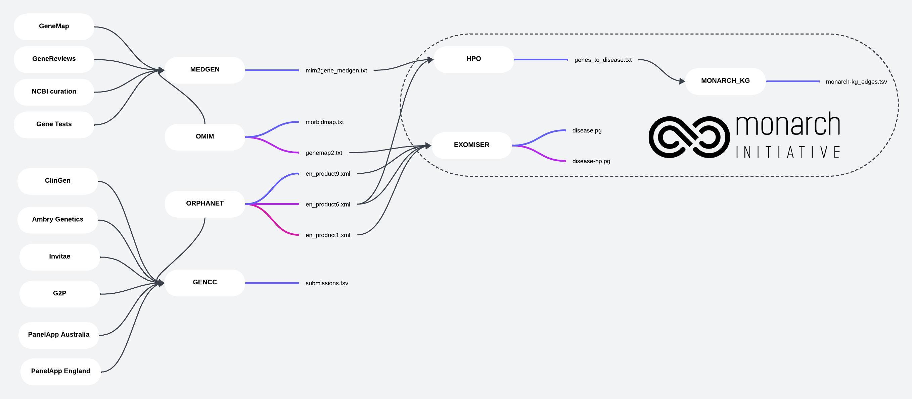
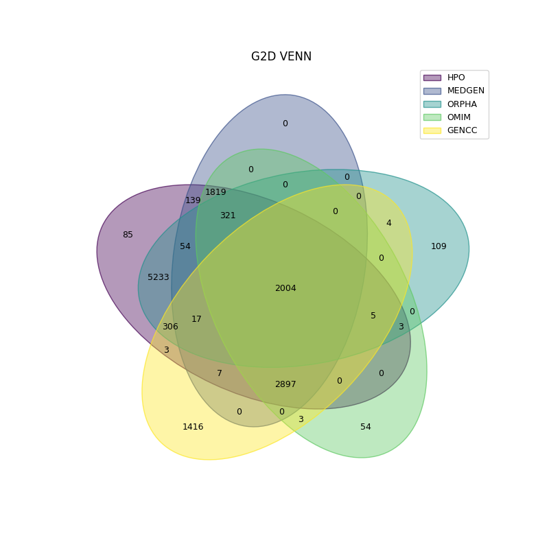
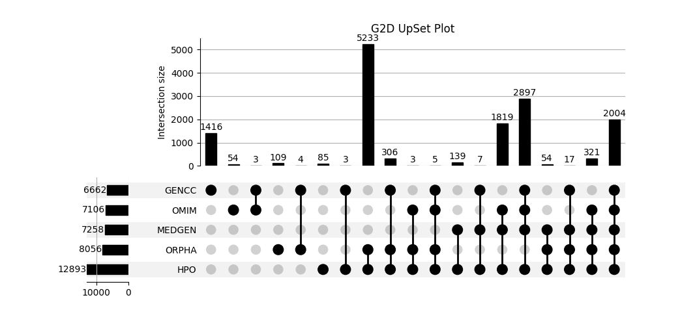

Gene-to-Disease Data Sources Comparison
The work involves an in-depth examination of gene-to-disease (G2D) associations by evaluating and comparing data from multiple sources. This comparison is crucial for assessing the consistency and completeness of G2D information across different databases.Through our comparative analysis, we assess:
- Data Coverage: Evaluating how extensively each source covers known gene-disease associations.
- Consistency: Identifying discrepancies and overlaps between sources to ensure data reliability.
- Integration: Understanding how the information from different sources can be harmonized to enhance our knowledge base.

Click on the link to open the image: G2D sources{kind=link}
Note: The figure provided does not comprehensively represent all sources or the full extent of gene-to-disease associations. It serves as a general overview.
This comparative analysis plays a critical role in Monarch Initiative, where the refined and validated G2D associations are utilized to:
- Build Comprehensive Knowledge Graphs: Integrating insights from various sources to create knowledge representations of gene-disease relationships.
- Improve Data Accuracy: Refining datasets by cross-referencing multiple sources to ensure the highest quality of information.
- Support Collaborative Research: Providing validated and consolidated data for use in collaborative projects and further research initiatives.
Sources
The primary data sources we currently consider for analysis include:
- HPO (Human Phenotype Ontology): genes_to_disease.txt
HPO provides a structured ontology for phenotypic abnormalities observed in human disease. The genes_to_disease.txt file contains gene-to-disease (G2D) associations based on phenotypic traits curated from various sources. HPO is widely used in genomic research for annotating genetic data, enabling the study of how genetic variations are related to specific human phenotypes.
- MEDGEN: mim2gene_medgen.txt
MEDGEN is an NCBI (National Center for Biotechnology Information) resource that compiles information on the relationships between human genes and medical conditions. The mim2gene_medgen.txt file links OMIM (Online Mendelian Inheritance in Man) entries to their corresponding gene records, offering a comprehensive view of G2D relationships as compiled from multiple data sources.
- ORPHANET: en_product6.xml
ORPHANET is a specialized reference portal for rare diseases and orphan drugs. The en_product6.xml file from ORPHADATA includes G2D associations, with a particular emphasis on rare and orphan conditions. This dataset is essential for research in rare diseases, providing insights that might be underrepresented in more general databases.
- OMIM (Online Mendelian Inheritance in Man): morbidmap.txt
OMIM is an authoritative resource for information on human genes and genetic disorders. The morbidmap.txt file maps genes to their associated diseases and phenotypes, drawing on extensive scientific literature and expert curation. OMIM's data is foundational in medical genetics, supporting both clinical practice and research into the genetic basis of disease.
- GENCC (Gene Curation Coalition): gencc-submissions.tsv
GENCC is a collaborative effort that aggregates gene curation data from multiple expert groups, focusing on the validity of G2D associations. The gencc-submissions.tsv file contains G2D associations supported by both clinical and experimental evidence. This dataset plays a critical role in understanding the clinical relevance of G2D relationships, particularly in the context of diagnostic genomics and personalized medicine. For our analysis, only associations classified as moderate, strong, and definitive were considered.
Mappings
The primary normalization and mapping procedures we currently apply include:
- Disease Normalization to MONDO: mondo.sssom.tsv
Diseases are normalized to the MONDO (MONDO Ontology) identifier to ensure consistent representation across datasets. MONDO integrates and harmonizes disease classifications from multiple sources, providing a unified framework for disease annotation. The mondo.sssom.tsv file contains mappings of various disease identifiers from source databases to their corresponding MONDO terms. This file uses the SSSOM (Simple Standard for Sharing Ontological Mappings) format, which provides a standardized way to represent and share mappings between different ontologies and identifiers.
- Gene Normalization to HGNC: gene_mappings.sssom.tsv
Genes are mapped to HGNC (HUGO Gene Nomenclature Committee) identifiers to standardize gene representation. HGNC provides a unique and consistent naming system for human genes, ensuring uniformity across different datasets. The gene_mappings.sssom.tsv file includes mappings of gene identifiers from various sources to their HGNC equivalents. This file also uses the SSSOM (Simple Standard for Sharing Ontological Mappings) format, facilitating consistent representation and sharing of gene mappings.
These normalization and mapping procedures improve the integration and analysis of data from diverse sources, enhancing the accuracy and reliability of gene-to-disease research.
Assets
The g2d_analysis script produces several assets that are provided with each release to offer insights into gene-to-disease (G2D) data analysis. These assets include various visualizations and spreadsheets that facilitate a comprehensive understanding of the data. Below are the descriptions to the generated assets:
-
Venn Diagram

This image provides a Venn Diagram visualizing the overlap between different gene-to-disease associations. It helps to identify common and unique associations among various datasets. -
Upset Plot

The Upset Plot offers a detailed view of the intersections between different gene-to-disease associations. It allows for a deeper analysis of the relationships and overlaps across datasets. -
Consolidated Edges (Spreadsheet)
This spreadsheet consolidates all gene-to-disease edges from various sources into a single file. It provides a comprehensive overview of the associations across datasets.Example Row:
disease_id gene_id sources MONDO:0000023 HGNC:15625 HPO | ORPHA MONDO:0000023 HGNC:21876 HPO | ORPHA MONDO:0000030 HGNC:1958 GENCC MONDO:0000030 HGNC:1962 GENCC MONDO:0000070 HGNC:10618 HPO | MEDGEN | OMIM MONDO:0000070 HGNC:10907 HPO | MEDGEN | OMIM -
Edges by Sources (Spreadsheet)
This spreadsheet details the gene-to-disease edges categorized by their source datasets. It allows for easy comparison of associations from different sources. -
Unique Edges by Sources (Spreadsheet)
This spreadsheet highlights the unique gene-to-disease edges for each source dataset, helping to identify distinct associations not shared with other datasets. -
Edge Difference Between Sources (Spreadsheet)
This spreadsheet captures the differences in gene-to-disease edges between source datasets, facilitating the comparison of associations across sources. -
Missing Mappings (Spreadsheet)
This spreadsheet lists any missing mappings that could not be resolved between gene and disease identifiers, helping to identify gaps in the data. -
Analysis Overview (Text)
The Analysis Overview provides a textual summary of the findings from the G2D analysis. It includes insights into the data, trends observed, and any notable patterns or anomalies.
These assets will be included with each release to provide up-to-date insights and facilitate ongoing analysis and review.
GitHub Releases
For information on the latest releases of the source data analysis scripts, including updates and new features, please visit our GitHub Releases page.
Each release on this page provides:
- Release Notes: Detailed descriptions of the changes, updates, and fixes included in the release.
- Download Links: Direct links to download the release assets, such as scripts, data files, and documentation.
- Version History: A record of all previous releases, allowing you to track the evolution of the project over time.
Stay updated with the latest developments and improvements by checking our releases page regularly.